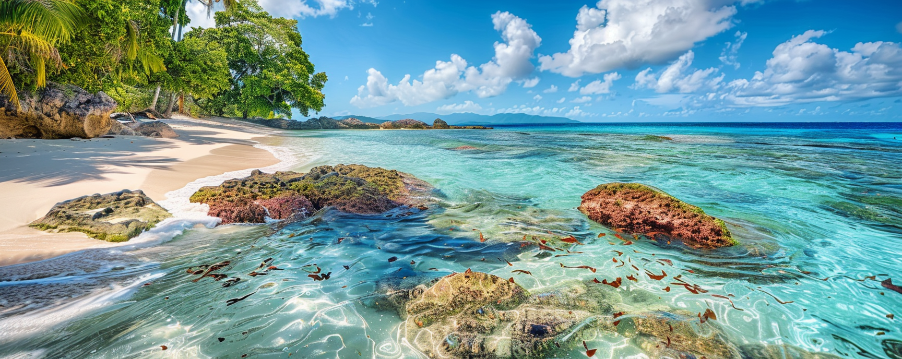
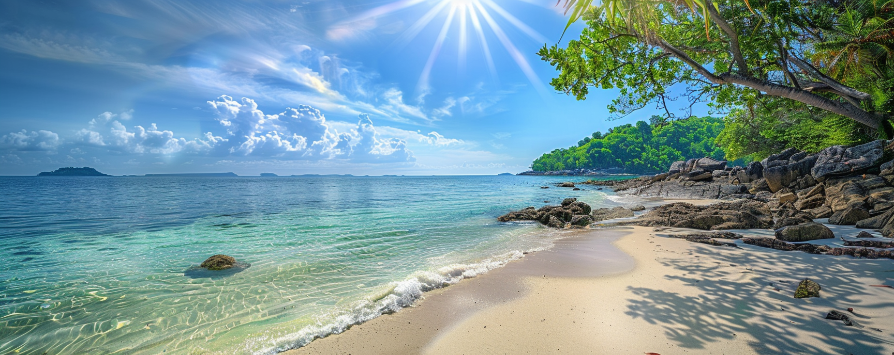
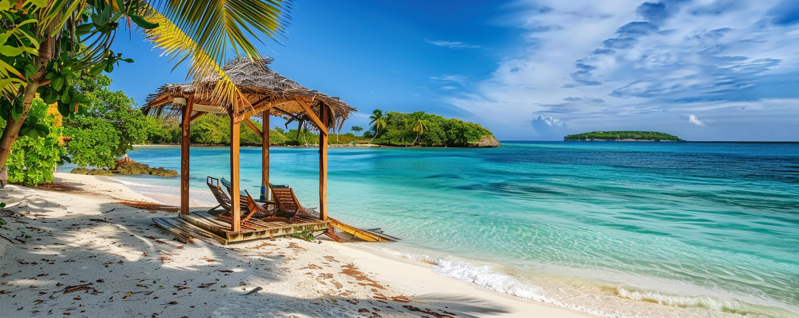
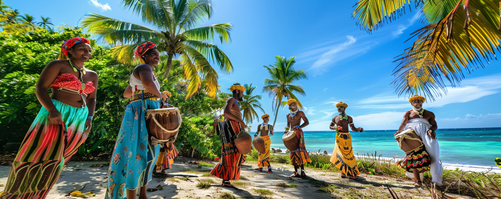
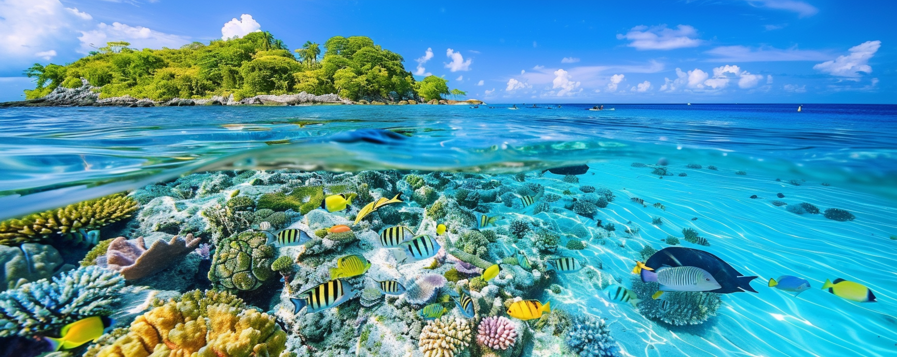
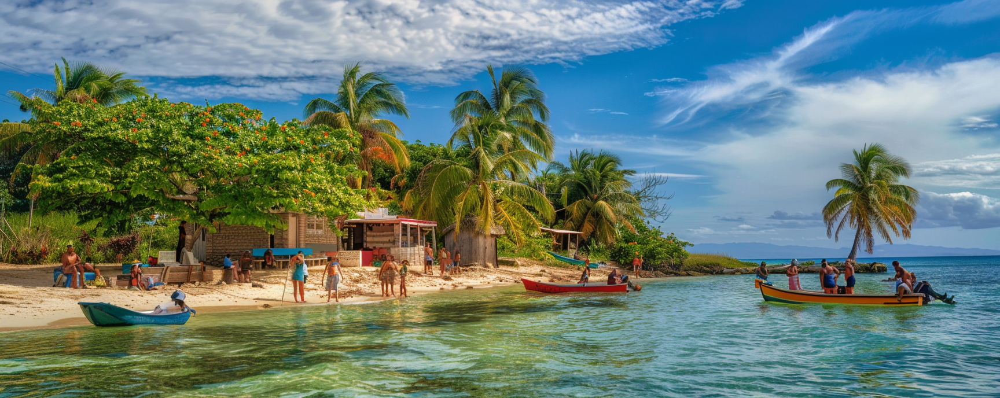
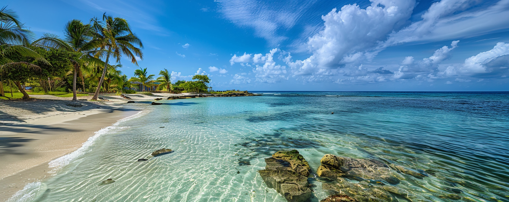

А зараз розповім коротенько про всі плюси життя на Карибах!
Колись давно, народженням нашої історії став час, коли коралові острови були перші відкриті людством. Подорожуючи навколо світу, мандрівники відкрили ці величні острови з білим піском, навколо яких розкинулися теплі туркізні хвилі. Це були місця, де природа віддавала свою найкращу красу - величезні коралові рифи створювали унікальні підводні ландшафти, заворожуючі своєю красою та різноманіттям. Зміна пори року тут не відчувалася, оскільки тропічний клімат дарував постійне тепло та сонячні дні, що перетворювали життя на островах у безкінечний літній відпочинок. У цьому раї на землі кожен день був заповнений релаксом та відпочинком. Острівний спосіб життя дозволяв людям відірватися від щоденних проблем та стресів міського життя, занурюючись у світ безтурботного спокою. Проживання на островах також відкривало перед людьми можливості для вивчення екзотичних місцевих традицій, культури та кухні. Кожен день був наповнений смаками та ароматами унікальних страв та напоїв. Активний відпочинок на коралових островах був безмежним. Дайвінг, снорклінг, серфінг, яхтинг - це лише декілька з можливостей, що пропонувалися мешканцям та гостям островів. Кожен міг знайти розвагу на свій смак і зануритися у відкритий світ пригод та емоцій. Та, безумовно, на коралових островах створювалася неповторна спільнота, де кожен знав кожного, а дружелюбна атмосфера сприяла створенню теплих відносин. Спільне життя на острові змушувало людей підтримувати один одного та допомагати в усіх справах. І, нарешті, життя на коралових островах виховувало екологічну свідомість та відповідальність. Мешканці та гості островів були свідомі важливості збереження природних ресурсів та екосистеми островів для майбутніх поколінь, що дозволяло створити рівновагу між природою та людською діяльністю.
Швидке знайомство по сторонці:
- Природна краса
- Клімат
- Релаксація
- Екзотична культура
- Активний відпочинок
- Спільнота
- Екологічна свідомість
Природна краса
Природна краса: Коли Джек прибув на кораловий острів, перший ранок він провів, дивлячись на білий пісок, який світився в сонячний день, тепле туркізне море, яке відбивало відблиски сонця, і величезні коралові рифи, які створювали неймовірний підводний світ.
Клімат
Клімат: Кожен день на острові був як сонячний день на пляжі. Тропічний клімат дарував Джеку постійне тепло та сонячні дні, що створювало ідеальні умови для активного відпочинку та здорового способу життя.
Релаксація
Релаксація: Джек відчував миті, коли він може просто лежати на пляжі під пальмою, відчуваючи вітерець, який доторкався до його обличчя, і слухаючи лагідне шум моря, що допомагало йому відірватися від щоденних проблем та стресів міського життя.
Екзотична культура
Екзотична культура: Перші дні на острові він провів, вивчаючи місцеві традиції, культуру та кухню. Він підкорився екзотичному способу життя островитян і навіть навчився готувати місцеві страви.
Активний відпочинок
Активний відпочинок: Щодня Джек випробовував нові активності, такі як дайвінг, снорклінг, серфінг, яхтинг та багато інших, що робило його життя на острові захопливим та цікавим.
Спільнота
Спільнота: Життя на острові означало бути частиною спільноти. Джек швидко знайшов друзів серед місцевих мешканців, що сприяло створенню теплих і дружніх відносин між людьми.
Екологічна свідомість
Екологічна свідомість: Будучи на острові, Джек навчився цінувати природу та бути екологічно свідомим. Він активно долучився до збереження екосистеми островів для майбутніх поколінь.